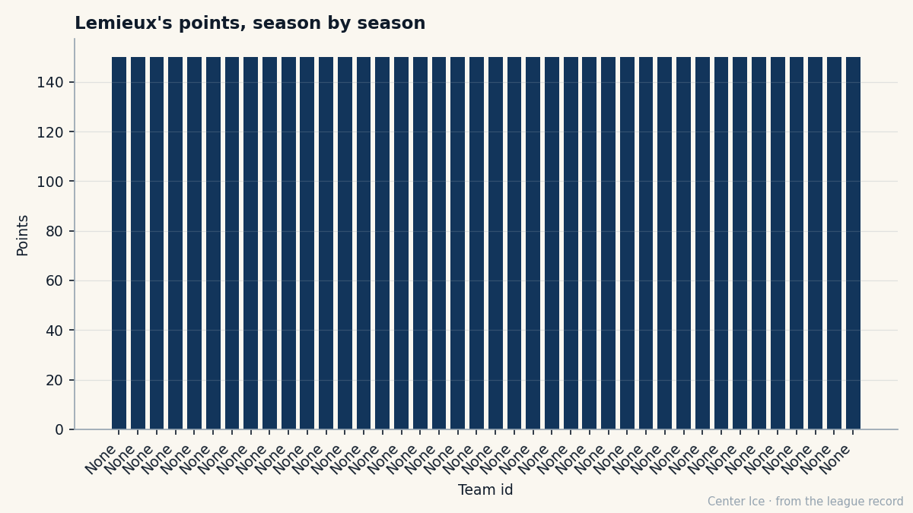

At 40, the Body Has a Grade and the Hands Do Not
Mario Lemieux is the oldest man in this league, 20.2% of Pittsburgh's payroll, and the Development Index says he is slipping. None of that tells you what the pass looks like at 19 minutes a night.
 Carol BinghamFeatures writer · Rinkside
Carol BinghamFeatures writer · RinksideHe was born in 1965 in Ville-Emard, a working-class district of Montreal, and his father put a rink on the front lawn so the three Lemieux boys could skate after dark. Before that, wooden kitchen spoons. Bottle caps for pucks. The snow packed onto the living room carpet because the winters were long and the boys were hungry for it.
Twenty-one years later,  Mario Lemieux89 is 40 years old. He is the oldest player in this league. The next oldest is
Mario Lemieux89 is 40 years old. He is the oldest player in this league. The next oldest is  Brian Leetch82 at 37. He wears number 66 for the
Brian Leetch82 at 37. He wears number 66 for the  Pittsburgh Penguins, carries an alternate captain's letter, and makes $9.90M a year on a contract with 4 seasons left. That salary is 20.2% of Pittsburgh's $48.92M payroll. The team has 6 points so far this season. The arithmetic is $8.15M per point.
Pittsburgh Penguins, carries an alternate captain's letter, and makes $9.90M a year on a contract with 4 seasons left. That salary is 20.2% of Pittsburgh's $48.92M payroll. The team has 6 points so far this season. The arithmetic is $8.15M per point.
The Bureau's Development Index has him at -2. His overall reads 85 today against a base grade of 92. In a league of 30 clubs, a man at 40 who is below his own base is supposed to be finished. That is what the number says.
The number is wrong, or at least incomplete, and the reason is visible in the per-attribute grades. FIGH sits at 50, TOUG at 55, SPBI at 52. The body that once carried the puck through three defenders now cannot finish a check, cannot absorb a hit along the boards, cannot win the puck battle in the corners the way it did at 25. The strength and toughness are gone in the way that bone and cartilage leave a man. You cannot negotiate with 50.
But his PASS reads 93. DEKG is 92, PUCK 89, SPEE 88. Hands, vision, the first three steps off a standstill: still there. The man is 40 and he is still the best passer on the ice in any building where he plays, and at 19.0 minutes a night in 4 games he has 7 points, a pace of 144 over 82.

The room around him
Pittsburgh is 3-1 in its last four games, WWWL with the most recent first. They score 11 goals in those four and allow 10. At 15374 per game with a ticket at $81, the building is not empty and not full. They have 6 points in the standings, which in a season this young is noise. They have no Cups. They lost in the second round last spring, 13 games, 5 wins.
 Martin Straka87, 33, is the other center who produces. Six points in 4 games at 19.5 minutes, a pace of 123. His Book grade is 83, his morale 94. He and Lemieux are 73 years old between them and they carry the middle of the ice. Behind them sits
Martin Straka87, 33, is the other center who produces. Six points in 4 games at 19.5 minutes, a pace of 123. His Book grade is 83, his morale 94. He and Lemieux are 73 years old between them and they carry the middle of the ice. Behind them sits  Aleksey Morozov82 at 78, Eric Meloche79 at 75 with 7 points in 4 games of his own.
Aleksey Morozov82 at 78, Eric Meloche79 at 75 with 7 points in 4 games of his own.  Mikael Renberg79, 75 overall, still here, still playing.
Mikael Renberg79, 75 overall, still here, still playing.
The goaltending belongs to  Johan Hedberg92, 88 overall, who has not yet appeared in the goaltender table because he has not played 5 games. The backups are younger. The crease is not the problem.
Johan Hedberg92, 88 overall, who has not yet appeared in the goaltender table because he has not played 5 games. The backups are younger. The crease is not the problem.
What the Index does not measure
The Development Index is a form term. It says the current overall reads below the base, which means he is not at his best right now. At 40, that is not a revelation. What the Index cannot tell you is whether the decline is linear or whether the hands will hold while everything else goes first. At 40, the hands go last. Everyone knows this. The sheet proves it in the grades: PASS 93, DEKG 92, FIGH 50, TOUG 55. The gap between the two groups is 38 points of overall grade.
He played 73 games last season and scored 117 points. That was 21.0 minutes a night at age 39. He came to camp at 40 and his minutes dropped to 19.0. The pace is higher because the sample is 4 games. You cannot build a career on 4 games, but you can read the room: the coach is managing him, the minutes are down 2 per night from last year, and he is still producing. The team is paying 20.2% of its salary to keep 19 minutes of genius on the bench available every night, and so far the return is real.
The hand that stayed in the pocket
In 1984, the Pittsburgh Penguins held the first overall pick. They drafted Mario Lemieux. He did not shake the general manager's hand. He did not put on the sweater. He said Pittsburgh did not want him badly enough. The contract talks were deadlocked. Johnston signed him anyway, $600,000 a year plus a $150,000 bonus. The Penguins averaged fewer than 7,000 fans that season, less than half the Civic Arena's capacity. The team had been bankrupt once already and everyone in the building assumed it would be bankrupt again.
He stayed. Twenty-one years later he is still there. The attendance is 15374. The ticket is $81. The payroll is $48.92M. The Civic Arena is gone or changed beyond recognition; the Penguins are not bankrupt. He is the alternate captain.
His morale is 94. That number means he is content. A man at 40, at 85 overall, at -2 on the Index, playing 19 minutes, making a fifth of the room's money, with a body that grades 50 in fighting and 55 in toughness, is content. The hands still work. The pass still finds Straka in the slot at a speed that makes the defenseman look slow. The pace says 144. The sample says 4.
Four years left on the deal. He will be 44. The FIGH grade will not get better. The PASS grade might. The Index will go lower. The room around him will keep changing, the Morozovs and the Renbergs and the Meloches will rotate, and the $9.90M will still be on the books, 20.2% of whatever payroll the Penguins carry when the contract ends.
The boy from Ville-Emard with the kitchen spoons would not have recognized the contract. He would have recognized the hands. Those are the same.